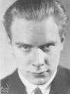
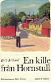
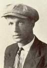
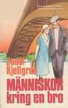
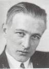
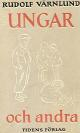
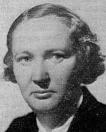
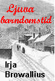

Yttersta Tvärgränd Ekermanska malmgården Torkel Knutssonsgatan norr om Hornsgatan Lignagatan Tanto Tantolunden Årstaholmar Årstabron         Promenad i Högalid den 31 maj 2003
I Beredningsutskottets utlåtande 1884 omtalas, att en del namn »hafva valts med hänsyn till belägenheten ellernaturförhållandena». Bland exemplen anföres Högalidsgatan. År 1885 gav man detta namn åt »den i två brytningarlagda gatan mellan platsen vid Långholmsbron och Söder Mälarstrand». Samtidigt blir Högalidsberget namn på»parken å Heleneborgs egor och dess vestra gränsgata». År 1917 lade man grundstenen till en kyrka på berget; deninvigdes den 10 juni 1923. Namnfrågan blev föremål för en ivrig diskussion. Bland namnförslagen Ansgariikyrkan,Olaus Petrikyrkan och Högalidskyrkan segrade slutligen det sista.
Ur Stockholmsliv, Staffan Tjerneld, 1950 En Stockholmskarta från mitten av förra seklet visar mest vita fläckar ute på västspetsen avSödermalm. Man kunde också säga gröna. Här låg tobaksland vid tobaksland påbergssluttningarna, och om den odlingen vittnade också de gamla kvartersnamnen Tobaksspinnaren och Tobaksspinneriet, som var den officiella benämningen på trakten norr om Hornstullsgatan. Bebyggelsen var sparsam. Sedan man lämnat Hornskroken och passerat Borgerskapets gubbhus,fanns bara några enstaka kåkar på vägen fram till tullinspektörsbostället och paviljongerna vidHornstull. Mitt emot Reimersholme och Långholmen låg Bergsunds sotiga fabrikskomplex, nerevid Pålsundet Johannisberg, Lorensberg och längst i öster Heleneborg med sin långa allé ochvackra park och intill Hornstull den gamla malmgården Jakobsberg med tillhörande trädgård.
»På min tid var allting annorlunda. Endast åt söder stängdes utsikten av Brännkyrkagatans fasader,vilka dock lågo för djupt ner för att kunna utestänga solen. Åt öster fortsatte bergen utan egentligtavbrott över Lundabergen och Skinnarvikshöjderna ända fram till Slussen, eller i vilket fall tillUppfartsvägens remna, åt norr hade vi bergknalle efter bergknalle ner mot Mälaren, åt väster sträcktesig en ofantlig äng ner till Långholmsgatan, som då för tiden endast varen smal väg, kantad med en hagtornshäck och några trädgårdar, på vars andra sida det återigenfanns berg ända ner till sjöstranden och Bergsunds varv, och i nordväst slutligen vidtog den, i ettbarns tycke, ofantliga Lorensbergsparken, uppfylld av väldiga träd och ogenomträngliga vildsnår, somträngdes ner till det idylliska Pålsundet. När Lorensbergsparkens träd började falla för sågen, närstaden bredde ut sig, för att inringa bergen, och de första hyreskasernerna restes utefter bortre delenav Långholmsgatan, grepos vi små vildmän av dystra aningar om att vår gyllene tid närmade sigslutet. Såsom tappra siouxindianer förde vi en heroisk, men meningslös kamp mot den framryckandecivilisationen. Vi betraktade själva nybyggena såsom samvetslösa inkräktare, såsom personligadödsfiender, och vi härjade så gott vi kunde om nätterna, vilket åtminstone medförde det goda, attvåra föräldrars vedbodar alltid voro fulla med stulet virke. Fast i synnerhet riktades vårt hat mot de oskyldiga pojkar, som med sina föräldrar flyttade in i de nya husen.»
»... hästar och åkdon och dräng skall han ha Elias Sehlstedt sörjde säkert det makliga livet i tullpaviljongen. Visserligen sätter han upp enironisk min, men innerst inne menar han nog litet allvar med sitt »Sorgekväde vid minnet av dengamla tullbommen»:
När Västertull, en av Söders tre landtullar, 1652 flyttades från trakten söder om Yttersta Tvärgränd ner till stranden, tillkom Hornstull. En färja gick över till Liljeholmen. Den ersarttes på 1660-talet av en flottbro. En ny öppningsbar flottbro byggdes 1890. Tre spåprvägslinjer med slutstation vid Liljeholmsviken öppnades 1910-1911 i de sydvästra förorterna. De passagerare som skulle vidare in till staden fick promenera över flottbron. 1913 beslöt man att bygga en fast bro i stället för den rangliga flottbron. År 1915 ersattes flottbron till Liljeholmen av en bro där spårvagnar kunde köra. Det var en låg klaffbro, och de ständiga broöppningarna blev alltmer störande för trafiken. Därför beslöts 1925, att en ny bro, högre och bredare, skulle byggas, Den försågs också med spårvagnsspår. 1928 öppnades den för trafik. På 1950-talet breddades Liljeholmsbron. Monica Eriksson. Från CD:n Söder i våra hjärtan På Elias Sehlstedts tid sträckte sig obebyggda bergknallar bort mot Bergsunds bruk. Vidmitten av 1700-talet fanns det ett utvärdshus här, »Bärg och Sund» eller »Bärgsund», ochsamtidigt drevs i närheten ett »BläckFörtenneriWärk», som höll soppkittlar, matskedar och annatgods till salu i en bod på Stora Nygatan. Bergsunds namn blev ryktbart efter 1769, då skottenThomas Lewis här grundade ett järngjuteri och Sveriges första mekaniska verkstad. När Bergsunds 1929 upphörde hade bebyggelsen ganska länge varit på marsch mot fabriken. 1908 slötsett preliminärt avtal mellan Stockholms stad och Bergsundsaktiebolaget rörande reglering ochstyckning av bolagets område, och några år senare började de första hyreskasernerna klättra upp förbergen i det gamla kvarteret Tobaksspinneriet. Längst upp byggdes Högalids folkskola, som invigdes1921.
|